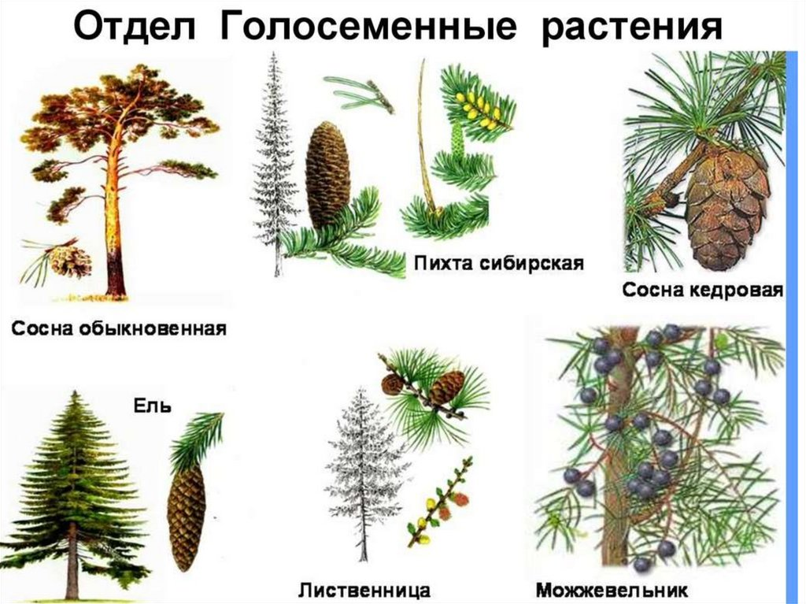

Голосеменные-вид растений,размножающихся семенами.В них входят:Сосна обыкновенная,пихта,ель и т.д.
Но если вы не такой тупой,и не хотите читать эту херню, то кликните на фото.
Но если вы тупой, то прочтите что Я написал снизу.
Голосеменны́е расте́ния (лат. Gymnospérmae) — древняя группа семенных растений, появившаяся в верхнем девоне, около 370 млн лет назад[1]. Название указывает на главную отличительную черту этих растений, a именно на то, что семяпочки, а затем и развивающиеся из них семена не имеют, в отличие от покрытосеменных, замкнутого вместилища. Завязь обычно имеет вид простой чешуи, на которой сидит одна или несколько семечек; иногда же и эта чешуя не развивается. Термин «gymnospérmae» предложен в 1825—1827 годах шотландским ботаником Робертом Броуном (открывателем «броуновского движения»)[2], впервые подробно остановившимся на принципиальных различиях между голосеменными и покрытосеменными. Русскоязычный термин «голосеменные» введён в практику, вероятно, проф. А. Н. Бекетовым[3]. Голосеменные включают более 1100 современных видов.Перейти к разделу «#Современные голосеменные» Содержание 1 Классификация голосеменных растений 1.1 Устаревшие или упрощенные классификации 2 Современные голосеменные 3 См. также 4 Примечания 5 Литература 6 Ссылки Классификация голосеменных растений Иллюстрация из статьи «Голосеменные» в «Энциклопедическом словаре Брокгауза и Ефрона» Ранее голосеменные растения выделялись в специальный класс Gymnospermae, вначале в рамках семенных растений (в составе отдела Spermatophyta, 1882—1952), позже — в составе сосудистых растений (в составе отдела Tracheophyta, 1950—1981). Этот класс включал хвойные и подобные им растения, в том числе несколько групп вымерших растений, известных только по ископаемым остаткам. Несмотря на то, что голосеменные растения явным образом отличны от других групп высших растений (папоротникообразных и цветковых), ископаемые остатки длительное время служили доказательством того, что покрытосеменные произошли от голосеменных предков, что делало таксон голосеменных парафилетичным (современная кладистика пытается определять лишь такие таксоны, которые являлись бы монофилетическими — с прослеживающейся привязкой к общему предку и включающие всех потомков этого общего предка). Вместе с тем, некоторые исследования ДНК показывают, что голосеменные, возможно, являются монофилетической группой[4]. Современные семенные растения обычно разделяют на пять таксонов одного ранга (в современных публикациях чаще в качестве такого ранга используют класс), при этом по отношению к совокупности четырёх групп нецветковых растений для отделения их от группы цветковых (покрытосеменных) растений применяют термин «голосеменные», не рассматривая при этом его в качестве таксона[4]: Класс Гинкговые (Ginkgoopsida) Класс Гнетовые (Gnetopsida) Класс Саговниковые, или Цикадовые (Cycadopsida) Класс Хвойные (Pinopsida) Последняя классификации голосеменных, представленных в современной флоре Земли, приводится в работе Christenhusz et al. (2011).[5] В работе представлены 12 семейств, сгруппированные в 83 рода с общей численностью группы в 1080 видов (Christenhusz & Byng 2016[6]). Подкласс Cycadidae[en] Порядок Cycadales Семейство Саговниковые: Cycas Семейство Замиевые: Dioon, Bowenia, Macrozamia, Lepidozamia, Encephalartos, Stangeria, Ceratozamia, Microcycas, Zamia. Подкласс Ginkgoidae[en] Порядок Гинкговые Семейство Ginkgoaceae: Ginkgo Подкласс Gnetidae[en] Порядок Вельвичиевые Семейство Вельвичиевые: Welwitschia Порядок Gnetales Семейство Gnetaceae: Gnetum Порядок Ephedrales Семейство Ephedraceae: Ephedra Подкласс Pinidae[en] Порядок Сосновые Семейство Сосновые: Cedrus, Pinus, Cathaya, Picea, Pseudotsuga, Larix, Pseudolarix, Tsuga, Nothotsuga, Keteleeria, Abies Порядок Araucariales Семейство Араукариевые: Araucaria, Wollemia, Agathis Семейство Подокарповые или Ногоплодниковые: Phyllocladus, Lepidothamnus, Prumnopitys, Sundacarpus, Halocarpus, Parasitaxus, Lagarostrobos, Manoao, Saxegothaea, Microcachrys, Pherosphaera, Acmopyle, Dacrycarpus, Dacrydium, Falcatifolium, Retrophyllum, Nageia, Afrocarpus, Podocarpus Порядок Cupressales Семейство Сциадопитисовые: Sciadopitys Семейство Кипарисовые: Cunninghamia, Taiwania, Athrotaxis, Metasequoia, Sequoia, Sequoiadendron, Cryptomeria, Glyptostrobus, Taxodium, Papuacedrus, Austrocedrus, Libocedrus, Pilgerodendron, Widdringtonia, Diselma, Fitzroya, Callitris (включая Actinostrobus и Neocallitropsis), Thujopsis, Thuja, Fokienia, Chamaecyparis, Callitropsis, Cupressus, Juniperus, Xanthocyparis, Calocedrus, Tetraclinis, Platycladus, Microbiota Семейство Тисовые: Austrotaxus, Pseudotaxus, Taxus, Cephalotaxus, Amentotaxus, Torreya К голосеменным относят также несколько групп вымерших растений, в том числе: Беннетитовые, или Беннеттитопсиды (Bennettitopsida)[7][8]. Эту группу либо рассматривают как таксон в ранге класса[7][8], либо включают в состав Саговниковых в ранге порядка (Bennettitales) Семенные папоротники, или Птеридоспермы. Эту группу рассматривают как таксон либо в ранге отдела (Pteridospermatophyta), либо в ранге класса (Pteridospermae[8], или Lyginopteridopsida — Лигиноптеридопсиды[7]) Устаревшие или упрощенные классификации Иногда современные семенные растения рассматриваются как группа, состоящая из двух таксонов в ранге отдела[7][8]: Отдел Голосеменные (Pinophyta, или Gymnospermae), состоящий из четырёх указанных выше классов Отдел Цветковые (Покрытосеменные) (Magnoliophyta) Иногда голосеменные рассматриваются как группа, состоящая из четырёх таксонов в ранге отдела:[источник не указан 1748 дней] Отдел Гинкговые (Ginkgophyta) Отдел Гнетовые (Gnetophyta) Отдел Саговниковые (Cycadophyta) Отдел Хвойные (Pinophyta) Современные голосеменные До настоящего времени сохранилось очень мало видов голосеменных (по информации базы данных The Plant List (2013) — немногим более 1100[9]), лишь представители хвойных являются доминирующими в некоторых типах растительности[4]. См. также Семейства голосеменных и Роды голосеменных (списки по данным The Plant List) Список угрожаемых видов голосеменных Примечания С. А. Баландин. ГОЛОСЕМЕННЫ́Е. Большая российская энциклопедия. Дата обращения: 18 декабря 2021. Архивировано 18 декабря 2021 года. C.M.Goveil. Gymnosperms. — Meerut: Krishna Prakashan Media, 2007. — С. 7. — ISBN 8182830540. Бекетов А. Н. Голосеменные // Энциклопедический словарь Брокгауза и Ефрона : в 86 т. (82 т. и 4 доп.). — СПб., 1890—1907. Страсбургер, 2007. Christenhusz, M.J.M.; Reveal, J.L.; Farjon, A.; Gardner, M.F.; Mill, R.R.; Chase, M.W. A new classification and linear sequence of extant gymnosperms (англ.) // Phytotaxa : journal. — 2011. — Vol. 19. — P. 55—70. Архивировано 25 февраля 2021 года. Christenhusz, M. J. M.; Byng, J. W. The number of known plants species in the world and its annual increase (англ.) // Phytotaxa : journal. — Magnolia Press, 2016. — Vol. 261, no. 3. — P. 201—217. — doi:10.11646/phytotaxa.261.3.1. Архивировано 29 июля 2016 года. Фёдоров (ред.), 1978. Яковлев и др., 2008. Gymnosperms Архивная копия от 6 июня 2017 на Wayback Machine // The Plant List (2013). Version 1.1. (англ.) (Дата обращения: 15 февраля 2015) Литература Кадерайт Й. В. Система Spermatophytina // Ботаника. Учебник для вузов: в 4 т. = Lehrbuch der Botanik für Hochschulen. Begründet von E. Strasburger, F. Noll, H. Schenck, A. F. W. Schimper. / 35. Auflage neubearbeitet von Peter Sitte, Elmar W. Weiler, Joachim W. Kadereit, Andreas Bresinsky, Christian Körner / П. Зитте, Э. В. Вайлер, Й. В. Кадерайт, А. Брезински, К. Кёрнер; на основе учебника Э. Страсбургера [и др.]; пер. с нем. Е. Б. Поспеловой, К. Л. Тарасова, Н. В. Хмелевской. — 35-е немецкое издание. — М. : Издательский центр «Академия», 2007. — Т. 3. Эволюция и систематика / под ред. А. К. Тимонина, И. И. Сидоровой. — С. 399—415. — 576 с. — 3000 экз. — ISBN 978-5-7695-2741-8. — ISBN 978-5-7695-2746-3 (Т. 3) (рус.), ISBN 3-8274-1010-X (Elsevier GmbH) — УДК 58(075.8) Козубов Г. М., Муратова Е. Н. Современные голосеменные. — Л.: Наука, 1986 Яковлев Г. П., Челомбитько В. А., Дорофеев В. И. Ботаника: учебник для вузов / под ред. Р. В. Камелина. — 3-е издание испр. и доп. — СПб. : СпецЛит, 2008. — С. 44—45, 365—384. — 687 с. — 3000 экз. — ISBN 978-5-299-00385-7. Жизнь растений. В 6-ти т. / Гл. ред. Ал. А. Фёдоров. — М. : Просвещение, 1978. — Т. 4. Мхи. Плауны. Хвощи. Папоротники. Голосеменные растения. Под ред. И. В. Грушвицкого и С. Г. Жилина. — С. 257—420. — 447 с. — 300 000 экз.